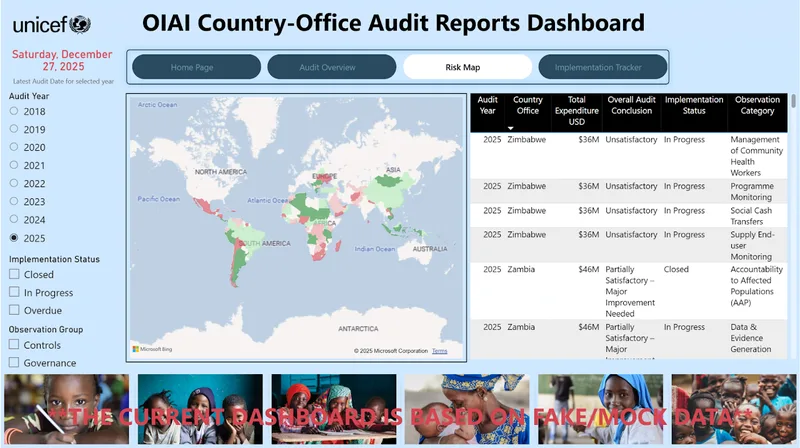
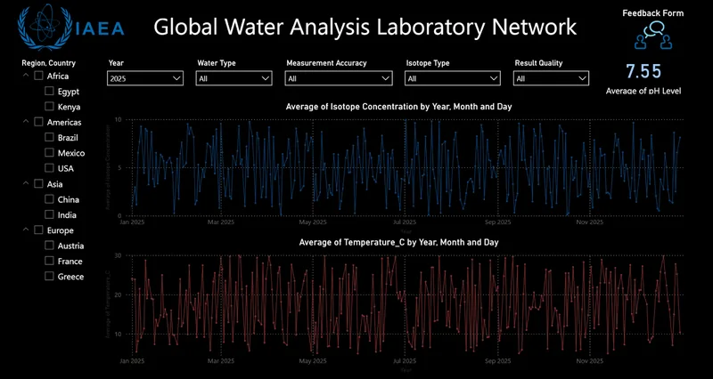
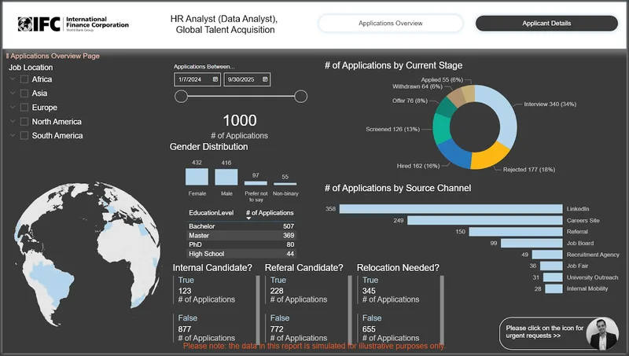

Hi,
Messy data in. Clear decisions out. Simple.
Work
-
Climate Evidence Engine 2026
An AI research pipeline for the University of Zurich that reads sustainability reports, annual reports and SEC 10-K filings and turns them into structured, source-linked evidence.
5,880 evidence rows · 392 STOXX 600 firms · 15 climate indicators
-
AI Early Warning Systems 2025
Deep-learning and ML models that forecast tropical storms, droughts and floods for the UN Office for Disaster Risk Reduction. The work won an international award and was presented at GP2025 in Geneva.
Watch the GP2025 presentation ↗ Virtual exhibition ↗ Code on GitHub ↗ -
Mathimatikos.xyz 2025
A multilingual generative-AI tutoring platform. Type a problem, snap a photo or write it by hand, and get a step-by-step solution with rendered maths and graphs, across mathematics, statistics, finance, physics and computer science. Shaped by feedback from bachelor's and master's students, it teaches the reasoning rather than just handing over answers.
Visit mathimatikos.xyz ↗ -
BetterPrompt 2025
A Chrome extension and SaaS backend that turns rough ideas into structured prompts, then drops them straight into ChatGPT, Claude, Gemini, Perplexity and more.
Get it on the Chrome Web Store ↗ -
Humanitarian Dashboards 2024
Food-security, displacement and shock-exposure pipelines and dashboards for UN Women, helping teams prioritise support for crisis-affected communities.
-
Power BI Case Studies 2025
Independent portfolio dashboards built on synthetic or representative demo data, showing how complex reporting questions become focused, usable Power BI experiences.

UNICEF-style audit compliance ↗
IAEA-style water science ↗
IFC-style talent analytics ↗
The Journey
- 2026University of ZurichAI Engineer & Research Associate
- 2023 – 26United NationsUN Women · UNDRR · IOM
- 2021 – 23BI Solutions GroupAdvanced Analytics & AI Consulting
- 2020 – 21IAEA, ViennaInformation Systems Analyst
- 2019 – 20Hellenic Institute of Cultural DiplomacyStatistician & Data Analyst
Worked with
- UN Women
- UNDRR
- IOM
- IAEA
- UZH
- Fujitsu
- LG
- Nespresso
- Collins Aerospace
- Coca-Cola
- PepsiCo
Talks & Writing
- Jun 2025 · Geneva Global Platform for Disaster Risk Reduction (GP2025) Award-winning AI early-warning models, presented at the UN General Assembly-mandated forum and the Early Warnings for All multi-stakeholder forum. Watch ↗
- Dec 2024 · Athens 22nd Investment & Stock Market Conference Guest speaker, Session 5: investing in new technologies and AI, and crypto-assets under the new MiCA regulation. Watch ↗
Data literacy articles
- How the Charlotte Hornets used big data to score big with fans
- The tale of two APIs: OData vs SOAP for SuccessFactors → Power BI
- Power BI with GA4 and UA: challenges and fixes from IOM
- Faster queries and efficient data modelling in Power BI
- Harnessing OCR in data science
- A useful “igloo” tool for working with uncertainty
Teaching & consulting
I tutor and train in statistics, econometrics, Power BI, Python and SQL, for students from LSE to Queen's Smith School of Business, and consult in data science, mathematics and finance.
This is where it gets personal.
Mathematician by training, engineer by habit. I build AI and data systems that hold up in the real world: reproducible, well-documented, and clear enough that people act on them. Read my M.Sc. thesis ↗
“Ioannis is easily the best tutor/trainer I have had in my professional life.”
Gautham · Power BI student
“He's incredibly efficient, respects our company's data privacy, and consistently delivers fast, high-quality results.”
Theodore Anton · consulting client
“He taught Statistics for my LSE 2nd year course. Will hire again.”
Shalini · LSE student
You've reached the end.
Or the beginning.
- Mail me
- bekas.ioannis.1996@gmail.com
- Rather talk?
- Book a call ↗
- Based in
- Greece · remote worldwide
- or find me on